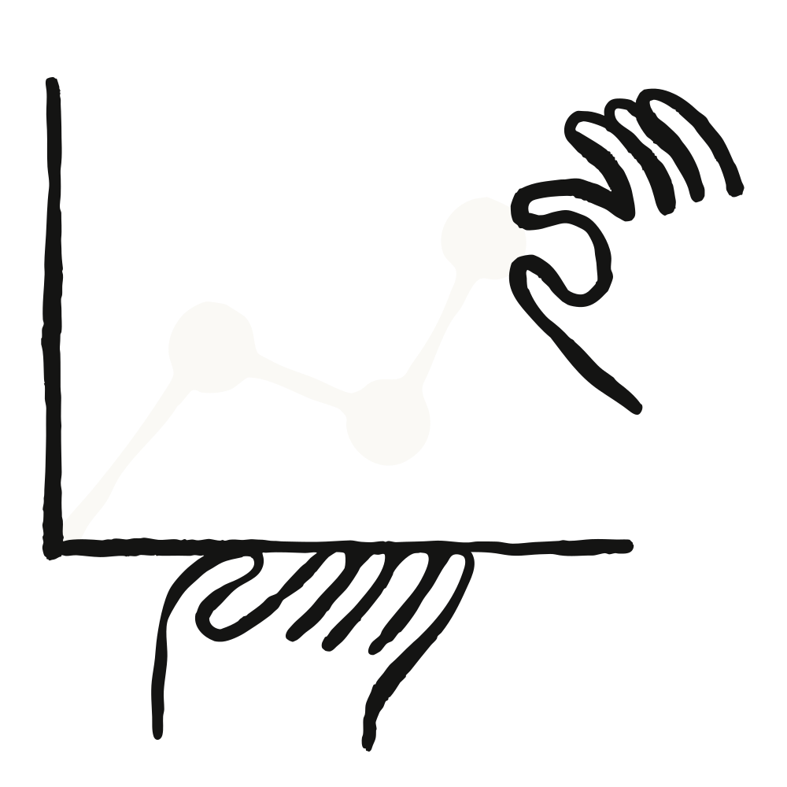

Hebbia는 기관 금융의 엄정함에 맞춰 만들어진 AI 플랫폼으로, 상위 50대 자산운용사 가운데 3분의 1 이상과 최상위(tier-1) 투자은행·로펌을 고객으로 두고 있다. 이 회사의 창립 프로덕트 매니저인 디비야 메타(Divya Mehta)는 업무 시간의 절반가량을 가장 큰 투자은행·사모펀드(private equity)·크레딧(credit) 고객들과 함께 보낸다.
이 고객들은 수천 건에 이르는 빽빽한 문서를 아우르는 분석을 근거로 결정을 내리며, 그 안에서 숫자 하나만 틀려도 거래 전체의 결과가 뒤바뀔 수 있다.
어떤 기회를 저울질하는 은행가나 투자자는 결정에 영향을 줄 수 있는 모든 데이터를 하나하나 짚고 넘어가야 한다. 여기에는 그 회사의 공시 서류, 크레딧 계약서, 내부 문서, 그리고 CRM에서 나온 정보 같은 정형(structured) 데이터가 모두 포함된다. Hebbia의 메타-프롬프팅(meta-prompting)은 평범한 말로 된 요청을 프롬프트로 바꾸고, 그다음 Claude가 수백 건의 문서를 가로질러 분석의 각 단계를 실행한다. 각각의 답은 Hebbia의 매트릭스(Matrix)에 있는 격자(grid) 위 저마다의 칸에 자리 잡으며, 이를 통해 완전한 투명성·추적 가능성(traceability)·조종 가능성(steerability)을 확보한다.
그 답들을 대규모로도 정확하게 유지하는 일이 바로 아디티야 라마나탄(Adithya Ramanathan)이 이끄는 Hebbia 응용 AI 연구팀의 몫이다. 라마나탄에게 이 일의 핵심은 신호(signal)를 찾아내는 것이다. 즉 모델이 올바른 데이터를, 올바른 맥락에서 끌어와, 고객이 알고 싶어 하는 것을 드러내도록 만드는 일이다.
"올바른 데이터에 연결하고 올바른 생태계(ecosystem) 안에 놓아 줄 때," 라마나탄은 말한다. "바로 그때 금융 전문가들이 실제로 좇는 알파(alpha, 초과수익)를 얻게 됩니다."
거기에 이르려면 모든 새 모델을 Hebbia의 금융 특화 벤치마크에 통과시켜야 한다. 그 모델이 대체하려는 기존 모델과 정면으로 맞붙이고, 모델이 좋아지는 속도를 따라잡기 위해 출시 때마다 벤치마크가 측정하는 범위를 넓힌다. 이 벤치마크는 일부러 어렵게 만들어져 있다.
"기준선은 극도로 높고, 우리 고객들은 우리를 그 극도로 높은 기준에 붙들어 둡니다. 그리고 그게 마땅합니다." 메타는 말한다. "결국 그들은 Hebbia 안에서 만들어진 분석과 최종 결과물을 근거로 아주 큰 규모의 투자 결정을 내리는 사람들이니까요."
응용 AI 팀의 연구자인 조 레너(Joe Renner)는 새 Claude 모델마다 그 벤치마크에 돌려 본다. 금융 지식 노동자의 핵심 사용 사례를 그대로 재현한 일련의 테스트를 동원한다. 그중 하나는 금융 문서 위에서의 질의응답과 인용(citation) 찾기를 다룬다. 또 다른 하나는 Hebbia의 에이전트 시스템을, 자사 챗 제품이 쓰는 도구들과 함께 돌려, 고객이 실제로 하는 것 같은 열린 결말의(open-ended) 다중 출처 분석을 수행한다.
Claude Fable 5는 두 테스트 모두를 레너가 측정해 본 가장 큰 격차로 통과했다. 질의응답·인용 테스트에서는 금융 문서에 대한 정확도가 상대적으로 약 20% 향상되며, 그가 어떤 새 모델에서도 본 적 없는 최고치를 기록했다. 인용 일치도(citation match)는 거의 그대로였는데, 레너는 이 향상이 모델이 자신이 찾아낸 근거를 더 잘 이해하는 데서 온다고 본다.
"결국 두 가지, 언뜻 근본적으로 보이는 자질로 귀결됩니다. 빽빽한 데이터 집합에서 올바른 정보를 찾아내는 능력, 그리고 그것을 정확하게 종합하는 능력이죠." 디비야는 말한다. "이 둘은 근본적인 모델 역량처럼 보이지만, 금융과 리서치 워크플로우를 생각하면 어마어마한 영향을 미칩니다." 에이전트 실행에서는, 여러 부분으로 이뤄진 요청의 모든 조각을 한꺼번에 붙들어, 그 전부에 답하고 각 답을 그 출처까지 되짚어 인용했다.
Claude Fable 5는 더 넓은 도달 범위(reach)도 보였다. 열린 결말의 분석에서, 데이터의 더 넓은 단면(cross-section)에서 추론해, 팀이 좀 더 자세히 들여다볼 만하다고 여긴 결론에 이르렀다. 레너는 그 이유를 이 모델이 긴 과업을 붙들어 두는 방식에서 찾는다. 요청의 모든 부분을 시야에 두고, 올바른 사실이 되돌아오도록 자신의 서브에이전트와 도구에 스스로 프롬프트를 던지며, 각 주장을 추론으로 때우는 대신 출처에 뿌리내린다는 것이다.
고객에게 우위를 안겨 주는 정보는 대개 비정형(unstructured)의 독점(proprietary) 문서 안에 들어 있다.
그런 문서는 금융이 이미 잘 모델링하는 정형·정량 데이터보다 대규모로 분석하기가 더 어려웠다. Hebbia는 바로 그 정성적(qualitative) 작업을 체계적으로 만들려고 매트릭스를 지었고, 모델 세대가 바뀔 때마다 그것이 감당할 수 있는 범위가 넓어진다.
그 대상은 수천 건의 문서가 든 데이터룸(data room)일 수 있는데, 여기서 할 일은 관련 있는 신호를 찾아내고, 그것을 인용하고, 투자 메모(investment memo)의 각 섹션을 초안으로 쓰는 것이다. 또는 어느 크레딧 거래에 얽힌 모든 문서를 분석하는 일일 수도 있다. 크레딧 계약서, 수정 조항(amendment), 부속 합의서(side letter) 각각이 빽빽한 기술 문서 수백 페이지에 달하는데, 그 비정형 더미에서 재무 조건이든 영업 제한 조건이든 전체 코버넌트(covenant, 대출 약정 조항) 묶음을 남김없이 뽑아낸다.
"이런 것들이야말로 Anthropic 모델들이 늘 정말 잘해 온 종류의 문서입니다." 메타는 말한다.
이전 Sonnet·Opus 모델로도, 매트릭스는 크레딧 계약서의 코버넌트, 즉 대출자가 자신을 위해 써 넣는 빽빽한 보호 조항을 이미 뽑아내고 종합할 수 있었다. Claude Fable 5로 Hebbia는 그 나머지 일까지 넘본다. 그 코버넌트 위에 얹히는 여러 단계짜리 분석, 이를 실시간 모니터링 데이터와 대조하기, 위험 플래그 달기, 그리고 코버넌트 리뷰와 내부 메모의 첫 초안까지 가는 것이다. 그런 리뷰는 크레딧 기업들이 예전에는 외부 팀에 큰돈을 주고 손으로 만들게 하던 결과물이다.
이제 Claude Fable 5 같은 모델이 이 일을 처음부터 끝까지(end to end) 감당할 수 있게 되자, 비교 대상은 그것이 대신하는 전문가의 시간이 되었다.
AI 이전에는, 상무이사(managing director)가 어느 CEO에게 제안하려고 자료를 필요로 할 때, 주니어 은행가가 그 회사를 파악하고 재무 자료를 끌어모으고 슬라이드를 만드는 데 2~3일이 걸렸다. Opus 이전 시절에는, 첫 초안을 만드는 데 걸리는 시간이 12~24시간으로 줄었고, Hebbia에 얹은 이전 Opus 모델들로는 그것이 더 줄어 처음부터 끝까지 돌리는 데 약 하루가 걸렸다고 메타는 말한다. 그 뒤 Hebbia는 그 일 전체를, 여러 출처에 걸쳐 데이터를 모으는 일련의 결정론적(deterministic) 에이전트 단계로 데이터를 그러모으고, 분석을 하고, 최종 자료·재무 모델·내부 리서치를 몇 분 만에 만들어 내는 매트릭스로 코드화(codify)했다. 그래서 은행가는 어떤 매수자를 공략하고 그들을 어떻게 자리매김할지에 시간을 쓸 수 있다. Claude Fable 5는 이를 한층 더 조인다고 그는 말한다.
"모델이 아무리 뛰어나도," 일을 여러 단계로 쪼개는 것은 여전히 중요하다. 기업들은 어떤 문서가 분석에 들어가는지, 각 단계가 어떻게 짜이는지를 통제하길 원하기 때문이다. 그래서 Hebbia는 이런 작업들을 단일 모델 실행이 아니라 더 작고 반복 가능하며 검증된 단계들로 구성하기 위해 Claude Agent SDK를 도입하고 있다.
"거래 생애주기(deal lifecycle)를 압축하는 것은, 그런 투자를 두고 경쟁하는 기업의 능력에 어마어마한 영향을 미칩니다." 메타는 말한다.
그는 고객과의 대화에서 그것을 느낀다. 이삼 년 전만 해도 질문은 방어적이었다. 환각(hallucination)에 관한 것, 계산이 맞는지에 관한 것이었다. "오늘날 그 대화는 완전히 달라졌습니다. 이런 식이죠. 내 워크플로우를 어떻게 하면 더 많이 자동화할 수 있나? 어떻게 하면 더 많은 단계를 이어 붙일 수 있나? 어떻게 하면 열 개, 열다섯 개, 스무 개의 슬라이드 자료를 높은 충실도(fidelity)와 일관성으로 한 번의 클릭에 만들어 낼 수 있나?"
지금 Claude Fable 5를 시작해 보세요.